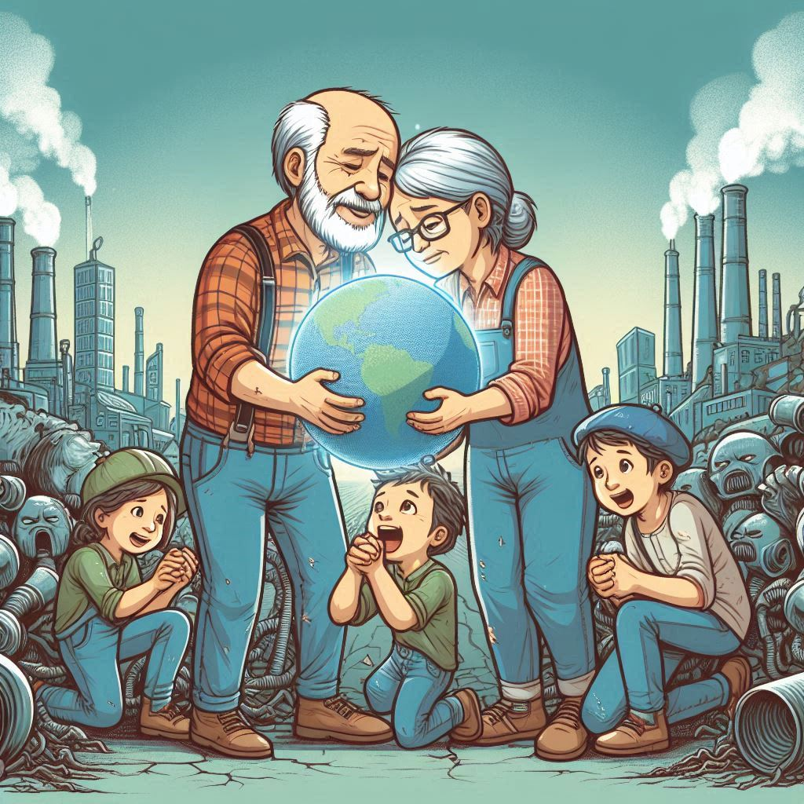

작가
조세희
출판일
1978년
감상평에 대한 AI그림
이 책은 산업화 과정에서 소외된 계층의 삶과 고통을 다루고 있다. 이를 통해 사업화의 이면에 숨겨진 사회적 부조리와 인간의 존엄성을 보여준다. 또한 역경과 고난 속에서도 피어나는 가족들의 사랑을 보여주여 독자들로 하여금 감동을 느끼게 한다.

감상평에 대한 AI평가
AI평가
주제의식: 작품이 다루는 사회적 부조리와 인간의 존엄성을 잘 짚어내고 있습니다. 산업화 과정에서 소외된 계층의 삶과 고통을 중심으로 이야기를 풀어 내며, 이를 통해 독자에게 중요한 메시지를 전달하고 있습니다.
감정의 표현: "역경과 고난 속에서도 피어나는 가족들의 사랑"이라는 표현은 작품의 감동적인 측면을 강조하며, 독자로 하여금 공감과 감동을 느끼게 합니다.
명확한 표현: 짧은 문장 안에 주요한 내용들을 잘 압축하여 표현하고 있습니다. 독자들이 작품의 핵심을 이해하고 감상할 수 있도록 돕고 있습니다.